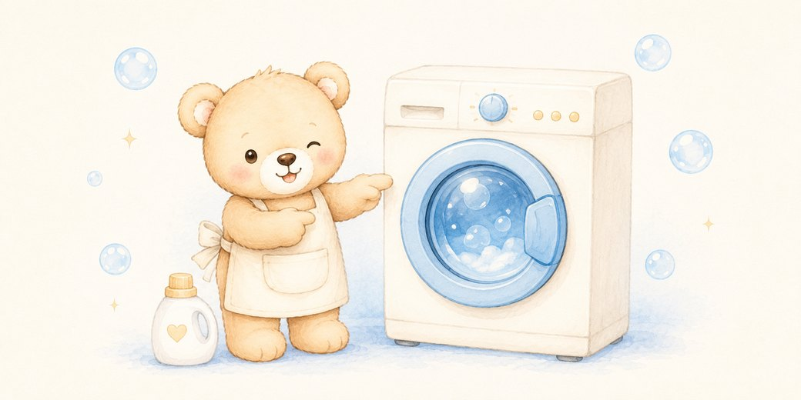
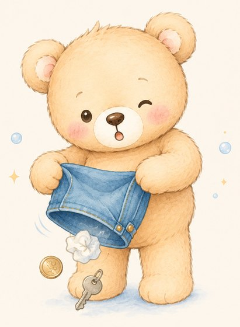
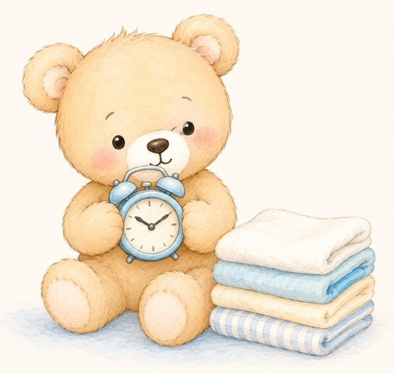
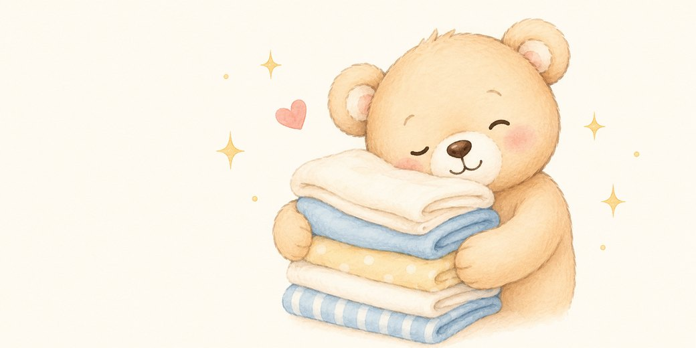

เลือกผ้าลงตะกร้า ตั้งเครื่องเอง ซักจริง อบจริง — จบเกมรู้เลยว่าตัดสินใจถูกหรือพลาดตรงไหน
แยก 3 กอง: ผ้าขาว · ผ้าสี · ผ้าสีเข้มตัวใหม่ — ไม่แน่ใจไปลองเกมแยกผ้าได้เลย
ไม่เกิน 3/4 ของถัง เหลือที่ให้ผ้าหมุน · เหลือช่องว่างเหนือผ้าประมาณ 1 ฝ่ามือ
ช่อง "ซัก" = น้ำยาซักผ้า · ช่อง "นุ่ม" = ปรับผ้านุ่ม (ดูสติกเกอร์บนฝากล่อง)
12 กก. 1.5–2 ฝา · 17 กก. 2–2.5 ฝา — ดูตารางเต็มด้านล่าง
🧊 เย็น = ผ้าสีทั่วไป กันสีตก
🌤️ อุ่น = ผ้าขาว คราบเหงื่อ
🔥 ร้อน = ผ้าปูที่นอน ฆ่าไรฝุ่น
ราคาโชว์ที่จอบนเครื่อง · จ่ายครบเครื่องเริ่มทำงานเอง · ถ้าไม่เริ่ม เช็คว่าปิดฝาสนิทแล้วหรือยัง
ซักเสร็จรีบเอาออก ทิ้งไว้นานผ้าจะเหม็นอับ · ระหว่างรอแวะจิบชานม Owl Cha ข้างๆ ได้น้า 🧋
คือน้ำหนักผ้าแห้งสูงสุด (ไม่ใช่ขนาดถัง ไม่ใช่น้ำหนักตอนเปียก) — แต่อย่าใส่เต็มพิกัด ใส่จริงราว 3/4 ของตัวเลข (12 กก. → ~8–9 กก. · 17 กก. → ~12–13 กก.)
วิธีเช็คไม่ต้องชั่ง: ใส่ผ้าแห้งหลวมๆ กดเบาๆ ควรเหลือช่องว่างเหนือผ้า ประมาณ 1 ฝ่ามือ
| ซักอะไร | เครื่อง |
|---|---|
| ผ้า 1 คน / 1 สัปดาห์ | 12 กก. |
| ผ้าปูที่นอน + ปลอกหมอน | 12 กก. |
| ผ้า 2 คน / สะสม 2 สัปดาห์ | 17 กก. |
| ผ้านวม ผ้าห่มหนา 1 ผืน | 17 กก. |
| ยีนส์ ฮู้ดดี้ ผ้าหนาเยอะ | ขยับขึ้น 1 ขนาด |
💡 ผ้าเปียกหนักขึ้น 2–3 เท่า — ยกไม่ไหวตอนเอาออกเป็นเรื่องปกติ
| เครื่อง | น้ำยาซัก | ปรับผ้านุ่ม |
|---|---|---|
| 12 กก. | 1.5–2 ฝา ~60 มล. | 1 ฝา ~35–40 มล. |
| 17 กก. | 2–2.5 ฝา ~80 มล. | 1.5 ฝา ~50–55 มล. |
อิงฝาขวดมาตรฐาน ~40 มล. · ผ้าเปื้อนมากเพิ่มได้อีกครึ่งฝา · สูตรเข้มข้นลดลงตามฉลาก
✓ ใช้ได้ดี — น้ำยาชนิดน้ำ สูตรฟองน้อย หรือขวดที่เขียน "เครื่องฝาหน้า / Front Load / HE"
✕ เลี่ยง — ผงซักฟอกธรรมดา (ฝาบน) และน้ำยาซักมือ ฟองล้นเกิน ล้างไม่ออก เหลือคราบขาว · น้ำยาฟอกขาวคลอรีนปนผ้าสี = ด่างถาวร
น้อยไป คราบ/กลิ่นอับไม่หลุด · มากไป ฟองล้างไม่ออก ผ้ากระด้าง คันผิว เก็บไว้เหม็นอับ · ปรับผ้านุ่มเกิน = ผ้าขนหนูซับน้ำไม่อยู่
แยกซัก + น้ำเย็น + กลับด้านใน = สีอยู่ทน ไม่เลอะใคร
ซักรวมผ้าอ่อน = สีตกทั้งกอง ผ้าขาวกลายเป็นเทาหม่น ซักคืนไม่ได้
ยีนส์ใหม่ เสื้อแดง/ดำตัวใหม่ ตกสีแรง 2–3 ครั้งแรกเสมอ
เสียเสื้อ 1 ตัว = 300–500฿ · แยกซักเพิ่มแค่ 50฿
แยกซักน้ำอุ่น = คราบเหงื่อคอเสื้อหลุด ขาวสะอาด
ซักรวมผ้าสี ต่อให้น้ำเย็นก็หม่นทีละนิด สะสมจนเหลือง
เสื้อนักศึกษา เสื้อยืดขาว ปลอกหมอนขาว
ผ้าขาวหม่นแล้วฟอกคืนยาก มักต้องซื้อใหม่
ใส่ ~3/4 ถัง ผ้ามีที่หมุน น้ำยาเข้าถึงทุกชิ้น สะอาดจริง
อัดแน่น = ผ้าขัดกันไม่หมุน ซักไม่สะอาด น้ำยาล้างไม่ออก ต้องซักซ้ำ
ผ้า 1 คน/สัปดาห์ → 12 กก. · ผ้านวม 1 ผืน → 17 กก.
ซักซ้ำ = จ่าย 2 รอบ 100–140฿ · เลือกถูกจ่ายรอบเดียว
12 กก. ใส่ 1.5–2 ฝา · 17 กก. ใส่ 2–2.5 ฝา = สะอาดพอดี ล้างหมด
น้อยไป: คราบ/กลิ่นอับหลุดไม่หมด · มากไป: ฟองล้างไม่ออก ผ้ากระด้าง คันผิว เก็บไว้เหม็นอับ
เครื่องร้านเป็นระบบประหยัดน้ำ ใช้น้ำน้อยกว่าเครื่องบ้าน ฟองจึงล้างยากกว่า
เทเกินทุกครั้ง = เปลืองน้ำยาปีละหลายร้อย แถมผ้าแย่ลง
ใช้น้ำยา ชนิดน้ำ สูตรฟองน้อย หรือขวดที่เขียน "เครื่องฝาหน้า / Front Load / HE"
ผงซักฟอกธรรมดาและน้ำยาซักมือ ฟองล้นเกิน ล้างไม่ออก เหลือคราบขาวบนผ้าสีเข้ม
เครื่องฝาหน้าใช้น้ำน้อยกว่าเครื่องฝาบนมาก ฟองจึงล้างยากกว่า · สูตรเข้มข้นใส่แค่ครึ่งเดียว
น้ำยาถูกชนิดใช้น้อยกว่า คุ้มกว่าในระยะยาว แถมผ้าไม่พัง
12 กก. 1 ฝา · 17 กก. 1.5 ฝา ใส่ช่อง "นุ่ม" เครื่องจะปล่อยตอนรอบล้างสุดท้าย
ใส่เกิน = เคลือบเส้นใยจนผ้าขนหนูซับน้ำไม่อยู่ ผ้ากีฬาอับชื้น
ผ้าเช็ดตัว ผ้าออกกำลังกาย ไม่ควรใส่น้ำยานุ่มเลยยิ่งดี
ใส่พอดี 1 ฝา ประหยัดกว่าครึ่ง ผลลัพธ์ดีกว่า
ซัก: เย็น=ผ้าสี · อุ่น=ผ้าขาว · ร้อน=ผ้าปูฆ่าไรฝุ่น
อบ: เย็น=ผ้ายืด/บอบบาง · อุ่น=ผ้าทั่วไป · ร้อน=ผ้าหนา
ร้อนกับผ้าสี = ซีดเร็ว · ร้อนกับผ้ายืด = หดย้วยถาวร
ลมยิ่งเย็นยิ่งถนอมผ้า แต่แห้งช้ากว่า ต้องหยอดเพิ่ม — ผ้าบอบบางยอมช้าดีกว่าผ้าพัง ผ้าทั่วไปใช้อุ่นคุ้มสุด
เสื้อฮู้ดดี้หดเสียทรง = เสียทั้งตัว 500–900฿ · เลือกลมผิดอบไม่แห้ง = หยอดเพิ่มรอบละ 10฿
ถุงซักกันยืด กันเกี่ยว ถุงเท้าไม่หายข้างเดียว
โยนรวม = ชุดชั้นในเสียทรง โดนซิปเกี่ยวเป็นรู
ไม่มีถุงซัก ใช้ปลอกหมอนมัดปากแทนได้
ถุงซักซื้อครั้งเดียว 30–60฿ ใช้ได้เป็นปี
ซิปปิด กระดุมติด เสื้อสกรีนกลับด้านใน = ไม่มีอะไรเกี่ยวกัน
ซิปเปิดจะเกี่ยวผ้าตัวอื่นเป็นรู · สกรีนถูกันจนแตกลอก
ยีนส์ กระโปรง เสื้อฮู้ดดี้มีซิป เสื้อทีมสกรีนลาย
ใช้เวลา 10 วินาที ป้องกันเสื้อพังทั้งกอง
เศษทราย/หินทำถังเป็นรอย · ไม่ถูกสุขอนามัยกับผ้าคนถัดไป · ห้ามอบเด็ดขาด ยางละลายเสี่ยงไฟไหม้
แปรงซักมือ แล้วผึ่งลม ยัดกระดาษหนังสือพิมพ์ข้างในดูดความชื้น
เป็นกติกาของร้าน ขอความร่วมมือทุกท่านนะคะ
เครื่องเสียหาย = ทุกคนเดือดร้อน ร้านต้องปิดซ่อม
ซักเสร็จรีบเอาออก ต่ออบเลยยิ่งดี — หน้าฝนแห้งหอมใน 40 นาที
ทิ้งในถังเกิน 1–2 ชม. เชื้อราขึ้น เหม็นอับ ต้องซักใหม่
ตากในหอหน้าฝนไม่แห้ง = กลิ่นอับเหมือนกัน
ซักใหม่ = จ่ายซ้ำอีก 50–80฿


ทิชชู่ 1 แผ่นที่ลืมไว้ จะป่นเป็นขุยขาวติดผ้าทั้งกอง · ลิปมัน/ปากกา ละลายด้วยความร้อนแล้วเลอะยาว · เหรียญกับกุญแจกระแทกกระจกฝาเสียงดัง
เขี่ยกระเป๋าทุกใบก่อนใส่เครื่อง 10 วินาที ช่วยได้เกือบ 100% — ของเล็กอย่างแอร์ป็อดกับบัตรมักหล่นอยู่ก้นกระเป๋า
เจอทิชชู่ป่นแล้ว ต้องซักใหม่ + สะบัดทีละตัว เสียเวลาเป็นชั่วโมง
ของที่ลืมไว้ในกระเป๋าเสื้อผ้า ทางร้านไม่สามารถรับผิดชอบได้นะคะ แต่ถ้าเจอในเครื่อง เราเก็บไว้ให้ที่เคาน์เตอร์ ทักไลน์ถามได้เลย
ส่วนใหญ่มาจากซิปที่เปิดอยู่เกี่ยวผ้าตัวอื่น · ตะขอชุดชั้นในเกี่ยวผ้าบาง · หรือผ้าที่เปื่อยตามอายุอยู่แล้ว เจอแรงปั่นเลยขาด
รูดซิปให้สุด ปลดตะขอ กลับด้านในออก · ผ้าบางกับชุดชั้นในใส่ถุงซัก · ผ้าเก่ามากแนะนำซักมือ
เครื่องฝาหน้าอ่อนโยนกว่าเครื่องฝาบนมาก (ไม่มีแกนกลางเหวี่ยง) ผ้าจึงเสียหายจากการเกี่ยวกันเองมากกว่าจากเครื่อง
ถุงซัก 30–60฿ ใช้ได้เป็นปี ป้องกันได้แทบทุกเคส
เช็ค 3 อย่างก่อน: ปิดฝาให้สนิทจนได้ยินเสียงคลิก · กดปุ่ม Start อีกครั้ง · ดูจอว่าขึ้นราคาครบหรือยัง
เครื่องจะไม่เริ่มถ้าฝาไม่ล็อก เป็นระบบความปลอดภัย ไม่ใช่เครื่องเสีย
ยังไม่ทำงาน — ถ่ายรูปหน้าจอเครื่อง + เลขเครื่อง ทักไลน์มาได้ทันที ทางร้านคืนเงินหรือเปิดเครื่องให้ใหม่
ช่วง 21:00–09:00 ไม่มีแม่บ้าน แต่แอดมินไลน์ตอบและแก้ให้ได้เหมือนกันค่ะ

เมื่อรอบซักจบแล้วมีคนรอใช้เครื่อง เขามักหยิบผ้าออกมาวางบนโต๊ะเพื่อใช้เครื่องต่อ ซึ่งเสี่ยงต่อการปะปนหรือหล่นหาย
ตั้งนาฬิกาปลุกไว้ตามเวลาที่เครื่องบอก แล้วกลับมารับภายใน 10–15 นาที
ถ้าต้องออกไปธุระนาน แนะนำใช้บริการ ฝากซัก-อบ-พับ (ฟรีค่าบริการ) แม่บ้านดูแลให้ตลอด ปลอดภัยกว่า
ผ้าที่ทิ้งไว้ในเครื่องหลังรอบซักจบ ทางร้านดูแลไม่ทั่วถึงจริงๆ นะคะ
อาจมีสีตกค้างจากผ้าย้อมหรือผ้าเปื้อนสีของรอบก่อนหน้า แม้เครื่องจะล้างตัวเองทุกรอบก็ตาม
ถ้าจะซักผ้าขาวหรือผ้าสีอ่อนสำคัญๆ ให้เปิดฝาดูในถังก่อน ถ้าเห็นคราบให้เปลี่ยนเครื่อง หรือแจ้งแม่บ้านล้างถังให้
ทางร้านล้างถังเครื่องเป็นประจำ ถ้าเจอถังสกปรกทักไลน์บอกได้ทันที เราไปจัดการให้เลย
เช็ค 3 วินาทีก่อนใส่ผ้า ป้องกันได้ทั้งกอง
สาเหตุหลักคือผ้าแน่นเกินไป ลมร้อนวิ่งผ่านไม่ทั่ว — เครื่องอบต้องการที่ว่างมากกว่าเครื่องซัก
ใส่แค่ครึ่งถัง สะบัดผ้าให้คลายก่อนใส่ · ผ้าหนา (ยีนส์ ผ้านวม ผ้าขนหนู) เลือกลมร้อน
ลมเย็น/อุ่นถนอมผ้ากว่าจริง แต่ใช้เวลานานกว่า ต้องเผื่องบเพิ่ม
แบ่งอบ 2 รอบหลวมๆ มักถูกกว่าอัดรอบเดียวแล้วหยอดต่อ 4 รอบ
ผ้าเปียกที่ทิ้งไว้ในถังเกิน 1–2 ชม. จะเริ่มมีกลิ่นจากเชื้อรา · น้ำยาที่น้อยเกินก็ทำให้กลิ่นเหงื่อฝังไม่หลุด
ซักเสร็จรีบเอาออก แล้วอบต่อเลยยิ่งดี · ใส่น้ำยาตามฝาแนะนำ ไม่ต้องประหยัดเกินไป
ผ้ากีฬา/ผ้าที่หมักไว้หลายวัน แนะนำน้ำอุ่น + น้ำยาฆ่าเชื้อลงช่อง "นุ่ม"
ต้องซักใหม่ = จ่ายซ้ำอีก 50–80฿
เกิดจากน้ำยาที่ละลายไม่หมด — มักมาจากผงซักฟอกสูตรฝาบน หรือใส่น้ำยาเยอะเกินไป
ใช้น้ำยาชนิดน้ำ สูตรฟองน้อย (Front Load / HE) และใส่ตามปริมาณที่แนะนำ
ผ้าที่เป็นคราบแล้ว ซักซ้ำอีกรอบโดยไม่ใส่น้ำยา คราบจะหลุดออกได้
น้ำยาถูกชนิดใช้น้อยกว่า ประหยัดกว่า และผ้าสะอาดกว่าด้วย
ความร้อนสูงทำให้เส้นใยผ้าฝ้ายและผ้ายืดหดตัว โดยเฉพาะเสื้อฮู้ดดี้ ผ้ายืด และเสื้อที่มีสกรีน
ผ้ากลุ่มนี้เลือกลมเย็นหรืออุ่น · หรืออบให้เกือบแห้งแล้วแขวนผึ่งต่อ
ดูป้ายในเสื้อได้ สัญลักษณ์วงกลมมีจุด = อบได้ · วงกลมมีกากบาท = ห้ามอบ
เสื้อตัวโปรดหดแล้วคืนไม่ได้ — เลือกลมให้ตรงผ้าคุ้มกว่า
ตอนรับผ้า แม่บ้านจะนับจำนวนชิ้นและถ่ายรูปไว้ทุกครั้ง เพื่อยืนยันร่วมกันทั้งสองฝ่าย
ถ้ามีผ้าที่ต้องดูแลพิเศษ (ผ้าไหม ผ้าแบรนด์ ผ้าสีตกง่าย) แจ้งตอนฝากได้เลย เราจะแยกซักให้
พบปัญหาจากการฝากซัก ทักไลน์ได้ทันที ทางร้านรับผิดชอบตามความเหมาะสมค่ะ
บริการฝากซัก-อบ-พับ ฟรีค่าบริการ จ่ายแค่ค่าเครื่อง
ร้านมีกล้องวงจรปิดตลอด 24 ชม. แต่ของส่วนตัวแนะนำให้พกติดตัวไว้นะคะ
ช่วงรอผ้าหลายคนวางมือถือ/กระเป๋าไว้บนโต๊ะแล้วเดินออกไป ซึ่งเสี่ยงต่อการสูญหาย
ถ้าลืมของไว้ ทักไลน์บอกเวลาโดยประมาณ เราช่วยดูกล้องและหาให้ได้
ฝากดูแลไม่ให้เด็กปีนเครื่องหรือเข้าไปในถังนะคะ — ฝาเครื่องล็อกอัตโนมัติเมื่อเริ่มทำงาน
ระหว่างอบ กระจกฝาจะร้อน อาจทำให้เด็กเผลอไปสัมผัสแล้วเจ็บได้
พื้นเปียกลื่นง่าย ถ้าเห็นน้ำหกบอกแม่บ้านได้เลย เราเช็ดให้ทันที
เพิ่มเพื่อน LINE ร้านครั้งแรก รับส่วนลดค่าซัก 50฿ ทันที · 1 คน 1 สิทธิ์
| เครื่อง | เย็น | อุ่น | ร้อน |
|---|---|---|---|
| 12 กก. | 50฿ | 60฿ | 70฿ |
| 17 กก. | 60฿ | 70฿ | 80฿ |
| เครื่อง | เริ่มต้น | เพิ่มเวลา |
|---|---|---|
| 12 กก. | 50฿ | +10฿ = +7 นาที |
| 17 กก. | 60฿ | +10฿ = +6 นาที |

จ่ายแค่ค่าเครื่อง! ส่งผ้าก่อน 18:00 รับคืนวันเดียวกัน · หลัง 18:00 รับวันถัดไป
รับ-ส่งผ้าถึงที่ เริ่ม 20฿ (บวกเพิ่มตามระยะทาง) — ทักไลน์นัดเวลาได้เลย
แม่บ้านประจำร้าน 09:00–21:00 · แอดมินไลน์ตอบ 09:00–21:00
โทร 083-145-6588 หรือทักไลน์ด้านล่างเลย
